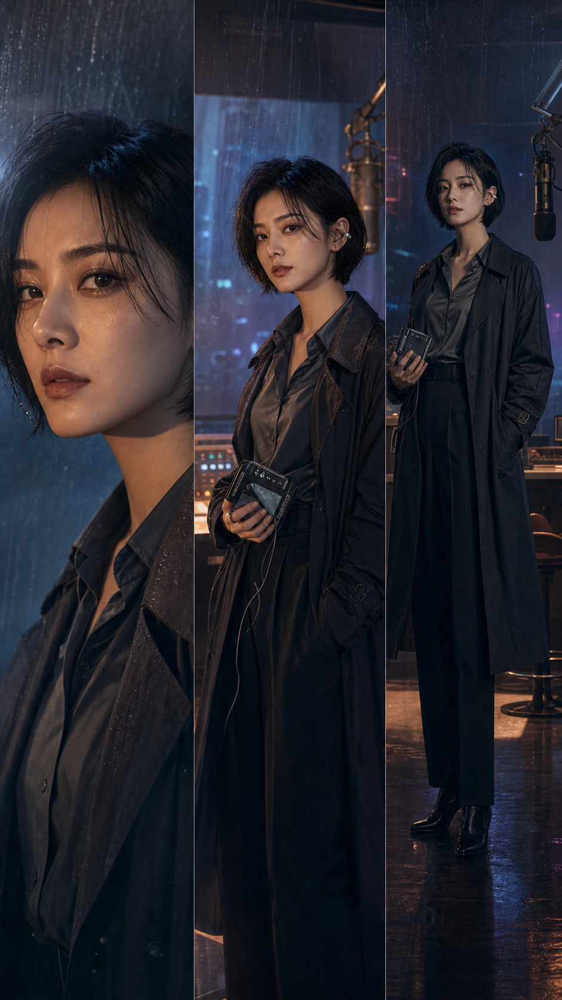

EP 01 · 第一章已拆解
雨夜的频率
本集结尾钩子
人物状态交接
动画连续性锚点
交给下一集
把创作意图写进项目圣经，让角色、画面、声音和节奏在同一条生产线上保持一致。
先锁定全季钩子和人物弧光，AI 会据此拆解 60 个两分钟单元，并把动画连续性传给下一集。
暴雨将至的上海，失忆的电台主持人收到未来语音。她必须在午夜前找出发信者，否则整座城市会陷入静默。
每集采用“上集钩子 → 本集目标 → 结尾反转 → 动画状态交接”结构。角色造型、天气、时间、道具和情绪曲线会持续传递，避免长剧常见的断层。
最后一档节目结束，调音台忽然亮起陌生的红灯。雨声里，有人喊出了她的名字。
补强了女主的“失忆代价”动机。
已将雨夜蓝与琥珀红写入视觉规则。
标记了 2 个需要人审的轴线风险。
CAST, COSTUME & CONSISTENCY ANCHORS
28 岁 · 深夜电台主持人 · 记忆被人为抹除

SHOT DESIGN, PERFORMANCE & CONTINUITY
沈清言抬眼，红色信号灯在瞳孔中闪烁。
深夜电台直播间，雨水划过玻璃，沈清言忽然抬眼望向闪烁的调音台，克制悬疑，电影级冷暖对比，镜头缓慢推进。
ORCHESTRATE · BATCH PLAN · COST GUARD
把已锁定的人物、世界规则与镜头上下文分配给剧本、视觉、镜头、声音和审片 Agent。未通过门禁的内容不会进入付费视频队列。
提示：计划编排不消耗模型额度；进入真实批量生成前仍会要求你确认预算。
DAILIES REVIEW · CUT, SOUND & NOTES
“如果你听见这段话，说明雨已经开始下了。”
交付包将包含主版、平台裁切版、字幕、镜头清单和全部可追溯的创作资产。
项目已更新